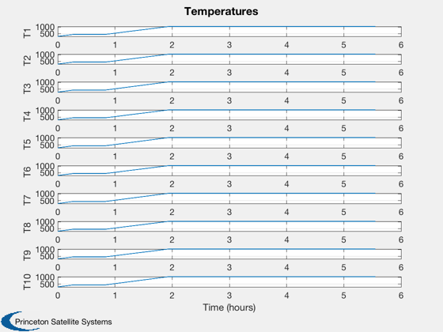
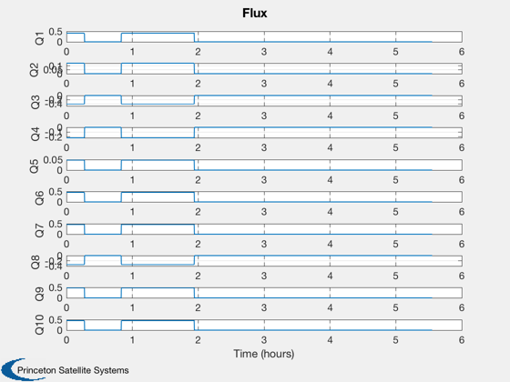
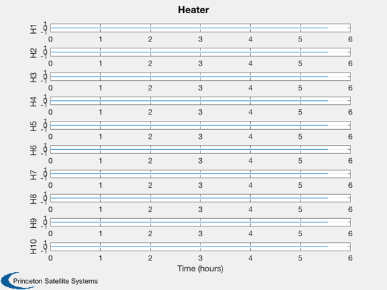

Design a linear quadratic temperature controller
Since version 9. ------------------------------------------------------------------------ See also AC, C2DZOH, QCR, Plot2D, TimeLabl ------------------------------------------------------------------------
Contents
%-------------------------------------------------------------------------- % Copyright (c) 2010 Princeton Satellite Systems, Inc. % All Rights Reserved %-------------------------------------------------------------------------- clear T; clear Q; clear H;
Create a test conductance matrix
dT/dt = aT + bq where q is the input heat flux or loss
%--------------------------------------- n = 10; a = zeros(n,n); for k = 1:n a(k,k) = -2; j = k+1; if( j < n+1 ) a(j,k) = 1; end j = k-1; if( j > 0 ) a(j,k) = 1; end end a(1,1) = -1; a(n,n) = -1; disp('Eigenvalues of a') eig(a) b = eye(n); r = eye(n); q = eye(n); dT = 10; gain = QCR( a, b, q, 100000*r ); disp('Eigenvalues of the closed loop system') eig(a-b*gain) [aC,gain] = C2DZOH( a, gain, dT ); [a, b] = C2DZOH( a, b, dT ); eig(a-b*gain) x = 300*ones(n,1); xS = x; qC = zeros(n,1); nSim = 2000; xP = zeros(3*n,nSim); t = 0; qH = (rand(n,1) - 0.5);
Eigenvalues of a
ans =
-3.9021
-3.618
-3.1756
-2.618
-2
-1.382
-0.82443
-0.38197
-0.097887
-1.1143e-17
Eigenvalues of the closed loop system
ans =
-3.9021
-3.618
-3.1756
-2.618
-2
-1.382
-0.82444
-0.0031623
-0.097938
-0.38198
ans =
0.68377
0.37366
0.021849
0.00025384
-8.9856e-07
-6.2294e-07
-2.7864e-07
-1.5614e-07
-1.0557e-07
-8.4153e-08
Simulation loop
%---------------- for k = 1:nSim % Bidirectional input heat flux %------------------------------ if( k < 100 || (k > 300 && k < 700) ) q = qH; else q = zeros(n,1); end qC = -gain*(x - xS); j = find(qC < 0); qC(j) = 0; xP(:,k) = [x;q;qC]; % State update %------------- x = a*x + b*(q + qC); t = t + dT; end
Set the time label
%------------------- [t, tL] = TimeLabl((0:nSim-1)*dT); T = cell(1,n); Q = cell(1,n); H = cell(1,n); for k = 1:n T{k} = sprintf('T%d',k); Q{k} = sprintf('Q%d',k); H{k} = sprintf('H%d',k); end
Plotting
%--------- Plot2D( t, xP( 1: n,:), tL, T, 'Temperatures' ) Plot2D( t, xP( n+1:2*n,:), tL, Q, 'Flux' ) Plot2D( t, xP(2*n+1:3*n,:), tL, H, 'Heater' ) %--------------------------------------  